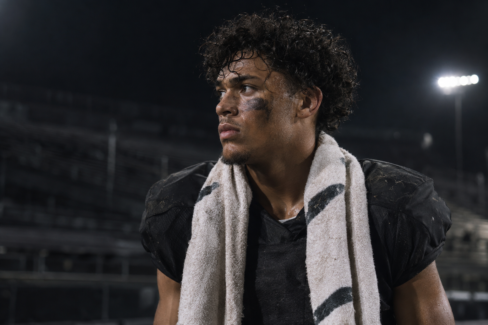

Create your Athlesite
Create your Athlesite

Athlesite · The athlete’s own website
Your storyOne home
A website that looks like you went pro. One link for coaches, scouts, brands and everyone who should know your name.
Create your AthlesiteThis is Jordan’s
One link. Everything they need to see.
02 · Made to feel like you
Same ambition.
Your own look.
Every Athlesite starts in the same studio and ends up looking like its athlete. Drag through fifteen examples, then open one up.
Left and right arrow keys move through the examples. Enter opens one.
03 · From athlete to Athlesite
Create
Your name, your sport, your story. Guided, not a blank page.
Personalize
Pick a style, your colors, your photos. It stays premium whatever you choose.
Publish
It stays private until you publish it. You can take it down any time.
Share
One link in your bio, your emails, your film. That’s the whole pitch.
Questions,
answered.
What you get, who can join and who sees your page.
Still have a question?Message @joinathlesite on InstagramA professional website for an athlete, at one link you own: your story, your film, your stats and what a coach looks for first, from position and class year to height and weight.
Athlesite is built for high-school athletes and recruiting. At launch, accounts are open to athletes 18 and over. Accounts for younger athletes, set up with a parent or guardian, are on the way.
No. A guided setup asks for your information and media, and the studio handles the design. You choose the style; it always looks finished.
No. Start where you are today. Your site can introduce you before a recruiting conversation or business opportunity exists.
You do. Your page stays private until you publish it, and you can take it private again at any time.
No. The athletes and pages here are fictional examples, and the images are illustrative. No endorsements or recruiting outcomes are implied.